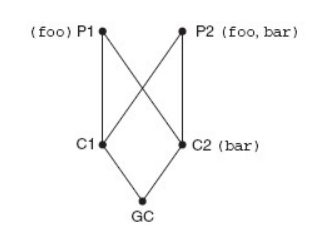
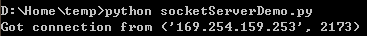
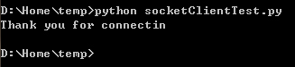

Python 基础参考
目录
1 入门知识
2 数据结构
2.1 序列
2.1.1 序列包括列表、字符串 、元组
2.1.2 基本操作
numbers = [1,2,3,4,5,6,7,8,9,10] #声明 numbers[3:6] #Slice 分片操作 #=> [4,5,6] 第二个索引号的元素不包含 numbers[-3:] #=> [8,9,10] numbers[0:10:2] #=> [1,3,5,7,9] numbers[10:0:-2] #=> [10,8,6,4,2] [1,2,3] + [4,5,6] #=> [1,2,3,4,5,6] [42] *6 #=> [42,42,42,42,42,42]
2.2 列表
helloList = list('Hello') #字符串转换成字符列表 #=>['H','e','l','l','o'] ''.join(helloList) #将字符列表转换成字符串 #=>'Hello'
2.2.1 列表可以修改
#delete element numbers[5] = 64 del numbers[5] #分片插入元素 numbers[5:5] = [6,6] #分片删除元素 numbers[2:8] = []
name = list('perl') name[2:] = list('ar') # name => ['p', 'e', 'a', 'r']
2.2.2 列表方法
- append
lst= [1,2,3] lst.append(4) lst #=> [1,2,3,4]
- count
某个元素出现的次数
[1,5,6,7,53,1,5].count(1) #=> 2
- extend
比 lst1=lst1+lst2 效率高
lst1.extend(lst2)
- index
['who','where'].index('who') #=> 0
- insert
[1,2,3,4,5].insert(2, 'e') #=> [1,2,'e',3,4,5]
- pop
移除列表中的一个元素(默认最后一个)，并返回该元素的值
x=[1,2,3] x.pop() #=> 3 x #=> [1,2]
注：使用 pop 可以实现数据结构——栈
- remove
移除第一个匹配项
[1,2,3,4,5,6,7,8].remove(5) #=> [1,2,3,4,6,7,8]
- reverse
- sort
x.sort()#x 顺序已改变 y = sorted(x)#y 为 x 排序后的列表
sort 可选参数(也适用于 sorted)：
一、比较函数（见下一节）
二、key
x.sort(key=len)
三、reverse
x.sort(reverse=True)
- 自定义排序(比较函数)
自定义 compare(x, y)
x<y 时返回负数，x>y 时返回正数，x=y 时返回 0
内建 cmp 函数例子：
cmp(42, 32) #=> 1 cmp(99, 100) #=> -1 cmp(5,5) #=> 0 numbers.sort(cmp)
2.2.3 空列表 []
2.2.4 空元素列表 [None]
2.3 元组
元组不能被修改
2.3.1 声明
1,2,3 or (1,2,3) #=> (1,2,3) () #空元组 #=> () (1,) or 1, #=> (1,) 3*(40+2,) #=>(42,42,42)
2.3.2 tuple 函数
传入序列，返回元组
tuple([1,2,3]) #=> (1,2,3)
2.3.3 使用元组的场合
- 元组可以在映射中当作键使用，列表不行(详见第四章)
- 元组是很多内建方法的返回值。必须处理他们。
2.4 字符串
2.4.1 基本操作
所有标准的序列操作对字符串同样适用，唯一需要记住，字符串是不可变的。
2.4.2 格式化操作符
format = "Hello, %s. %s enough for ya?" values = ('world', 'Hot') print format % values #=>Hello, world. Hot enough for ya?
2.4.3 常用方法
- list, tuple
list 将字符串转为列表，tuple 转为元组
- find
x.find("abc") #=>返回 index
- join1
seq = ['1','2','3'] sep = '+' sep.join(seq) #=> '1+2+3'
- lower,upper,title
title 功能： 单词首字母大写
- replace
x.replace('123', '456')
- split 是 join 的逆方法
'/usr/bin/env'.split('/') #=>['','usr','bin','env']
split 不提供参数时，默认根据空白字符分割，包括 tab、换行符等。
- strip
去除两侧空格，也可传参数，去除指定的头尾字符
- translate
同 replace 区别在于只处理单个字符。同时进行多个替换。
有时比 replace 效率高的多。
转换之前，需要完成一张转换表。可用 string 中的 maketrans
maketrans('cs', 'kz')
2.4.4 原始字符串(raw string)
使字符串中的转义符无效
r'c:\newtest.txt'
\n 不会被解释为换行符
2.5 字典
当索引不好用时使用
2.5.1 创建
phonebook={'Alice': '2341', 'Beth': '9102', 'Cecil': '3258'}#直接创建 phonebook['Cecil'] #=> '3258' phonebook={} phonebook['Denver'] = '5345' phonebook #=> { 'Denver': '5345' }
2.5.2 使用 dict 函数初始化
items = [('name', 'Gumby'), ('age', 42)] d = dict(items) d #=> {'age': 42, 'name': 'Gumby'} d=dict(name='Gumby', age=42) #另一种声明
2.5.3 基本字典操作
len(d) del d[k] k in d#(检查是否存在 k 键)
自动添加，对不存在的键复制等于创建了一个新项
2.5.4 字典的字符串格式化
字符串 % 字典名
"Cecil's phone number is %(Cecil)s." % phonebook #=>"Cecil's phone number is 3258."
2.5.5 字典方法
- clear
x={} y=x x['key'] = 'value' y #=> {'key': 'value'}
一、x = {} =>y 没变
二、x.clear() => y {}
- copy & deepcopy
x = {'key1': 'value1', 'key2': 'value2'} y = x.copy()
一、y.remove('key2')
y 和 x 均受影响
二、y['key1'] = 'value3'
y 受影响，x 不受
deepcopy 避免了该问题，无论 y 怎么处理，x 都不会变。
- fromkeys
使用给定的键建立字典，值默认都为 None
dict.fromkeys(['name', 'age'])
也可自己提供值的默认值
dict.fromkeys(['name', 'age'], 'unknown')
- get
更宽松的访问字典项方法
d={} d['name'] #=> 出错 d.get('name') #=> None
- has_key
has_key 相当于 k in d。python3.0 不包含该方法。
- items & iteritems
字典项以列表形式返回
d = {'key1': 'value1', 'key2': 'value2'} d.items() #=> [('key1', 'value1'), ('key2', 'value2')] it = d.iteritems() list(it) #=> [('key1', 'value1'), ('key2', 'value2')]
- keys & iterkeys
键以列表形式返回
- values & itervalues
值以列表形式返回
- pop
pop 用来获得对应于给定键的值，然后删除该项。
d.pop('key1')
- popitem
类似于 list.pop
因为字典没有顺序的概念，pop 出一个随机项。
用处：若想一个接一个地处理并移除项，用该方法。
- setdefault
d.setdefault('name', 'N/A') #字典中无该键返回如下： #=> 'N/A' #字典中有{'name': 'Gumby'} #=> 'Gumby'
- update
利用一个字典项更新另外一个字典
d.update(x) #更新源 d
2.6 其他
2.6.1 set
set 位于 sets 模块中。python2.3 以前需用 import sets。
set([0,1,2,3,0,1,2,3,4,5])#set 是由序列(或其他可迭代对象)构建的。 #=>set([0,1,2,3,4,5])#相同的成员会被忽略。 set(['fee', 'fie', 'foe']) #=>set(['foe', 'fee', 'fie'])#与字典一样，顺序是未知的
2.6.2 heap
优先序列的一种，以任意顺序追加元素。使用 pop 方法获取最小元素。
效率要比列表的 min 方法高。
堆算法：i 位置处的元素总是比 2*i 以及 2*i+1 位置处的元素小。
| heappush(heap, x) | 将 x 加入堆 |
| heappop(heap) | 将堆中最小元素返回 |
| heapify(list) | 将列表转为堆 |
| heapreplace(heap, x) | pop 出最小元素，加入 x |
| nlargest(n, iter) | 返回 iter 中第 n 大的元素 |
| nsmallest(n, iter) | 返回 iter 中第 n 小的元素 |
from heapq import * from random import shuffle data=range(10) shuffle(data) heapify(data) heappush(data, 0.4) heap #=>[0, 0.4, 4, 5, 1, 8, 9, 6, 7, 3, 2] heappop(data) #=>0
heapq 中的 nlargest 和 nsmallest 使用堆算法从可迭代对象中获取最大最小值
data=range(10) shuffle(data) nlargest(1, data) #=>9 nsmallest(1,data) #=>0
2.6.3 deque
Double-ended queue 双端队列
from collections import deque q = deque(range(5)) q.append(5)#默认在队列右端追加 q.appendleft(6) q #=>deque([6,0,1,2,3,4,5]) q.pop()#默认从队伍右端 pop 出元素 #=>5 q.popleft() #=>6 q.rotate(3)#右移三个元素 #=>deque([2,3,4,0,1]) q.rotate(-1)#左移一个元素 #=>deque([3,4,0,1,2])
3 语句
3.1 赋值语句
3.1.1 多个变量赋值
x, y, z = 1, 2, 3
3.1.2 交换变量
x, y = y, x
3.1.3 序列解包(sequence unpacking)
values = 1, 2, 3 values #=> (1, 2, 3) x, y, z = values x #=> 1
常用于函数方法返回元组时
key, value = scoundrel.popitem()
python 3.0 特殊解包
a, b, rest* = [1, 2, 3, 4] rest #=> [3, 4]
3.1.4 链式赋值
x = y = somefunction() #等同于 y = somefunction() x = y #不一定等价于 x = somefunction() y = somefunction()
3.1.5 增量赋值
与其他语言差不多+=、*=等
3.2 if 语句
如下会被视为 False:
False None 0 "" () [] {}
其他非空值被视为 True
True == 1 #=> True False == 0 #=> True #+end_src**** bool 函数 #+begin_src python bool('test') #=> True bool(42) #=> True bool('') #=> False
3.3 断言语句
age = -1 assert 0<age<100, 'message' #=>breakdown
3.4 while 语句
x=1 while x<=100: print x x += 1
3.5 for 语句
for number in range(1, 100): print number
range 包含下限 1，不包含上限 1002
#循环遍历字典 for key in d: print key, d[key]
3.6 拓展
3.6.1 列表推导式(轻量级循环)
[x*x for x in range(10)] #=> [0, 1, 4, 9, 25, 36, 49, 64, 81] #可加条件： [x*x for x in range(10) if x % 3 ==0] #=>[0, 9, 36, 81] [(x, y) for x in range(3) for y in range(3)] #=>[(0, 0), (0, 1), (0, 2), (1, 0), (1, 1), (1, 2), (2, 0), (2, 1), (2, 2)] #等同于 result = [] for x in range(3): for y in range(3): result.append((x, y))
3.6.2 序列合并迭代(zip)
合并两个序列为一个元组列表
names = ['name1', 'name2'] ages = [12, 45] zip(names, ages) #=> [('name1', 12), ('name2', 45)] #解包元组，遍历 for name, age in zip(names, ages): print name, 'is', age, 'years old'
3.6.3 编号迭代(enumerate)
enumerate 函数可以在提供索引功能的序列中，迭代返回键值对。
for index, string in enumerate(strings): if 'xxx' in string: strings[index] = '[censored]'
3.6.4 翻转和排序迭代(reversed, sorted)
reversed, sorted 与序列方法 reverse, sort 差不多，区别在于 reverse 和 sort 改变原调用对象
sorted 函数返回列表
reversed 函数返回一个可迭代对象
list(reversed('Hello,World!')) #=>'!dlroW,olleH'
3.6.5 for…else 语句
for n in range(99, 81, -1): root = sqrt(n) if root == int(root): print n break else: print "Didn't find it!"
break 直接进入 else 语句块
4 函数
4.1 定义函数
def fibs(num): 'generate fib sequence' result = [0, 1] for i in range(num-2): result.append(result[-2] + result[-1]) return result
4.2 参数
4.2.1 基本
函数内改变参数变量的值，不会改变外部传入变量的值。即值传递方式。
可变的数据结构，如列表。即引用传递方式。
4.2.2 不可变的数据结构，改变传入值的方法
使用返回值
def inc(x): return x+1
包在列表中传递
def inc([x]): x[0] = x[0] + 1 foo = [10] inc(foo) foo #=> 11
4.2.3 参数过多，顺序难记
def hello(greeting, name): print '%s, %s' % (greeting, name) hello('Hello', 'world')#参数顺序难记时，使用 参数名=传入值 的形式 hello(greeting='Hello', name='world')
4.2.4 参数默认值
def hello2(greeting='Hello', name='world'): #提供默认值 print '%s, %s!' % (greeting, name) hello2() #=>Hello, world!
4.2.5 任意数量的参数
- 参数定义时加上'*'
def print_params(title, *params): print title, params#传入的 params 参数会作为元组使用 print_params('Print params', 'param1', 'param2') #=>Print params #=>Print params ('param1', 'param2') print_params('Nothing') #=>Nothing ()
- 参数定义时加上'**'
def print_params2(**params): print params#传入的 params 参数会作为字典使用 print_params2(x=1, y=2, z=3) #=>( 'x' : 1, 'y' : 2, 'z' : 3)
4.2.6 将元组和字典作为参数(以上逆过程)
#序列用法 def add(x, y): return x + y params = (1, 2) add(*params)#加上* #=>3 #字典用法 def hello3(greeting='Hello', name='world'): print '%s, %s!' % (greeting, name) params = {'name': 'Sir Robin', 'greeting': 'Well met'} hello3(**params)#加上** #=>Well met, Sir Robin!
4.2.7 变量作用域
scope = vars()#vars()返回全局变量的字典 x=1 scope['x'] #=>1 scope['x'] += 1 x #=>2
以上代码说明：
赋值语句实际上是在一个全局变量字典中建立了一个键值对，
只不过这个字典是对外隐藏的。这个“不可见”字典就是变量的作用域。
能够创建变量作用域的代码段有 def、class、lamda。
4.2.8 递归
def power(x, n): if n == 0: return 1 else: return x * power(x, n-1)
4.3 查看函数说明
fibs.__doc__ 可访问函数说明、help(fibs) 更好用
4.4 空返回值
函数如果无返回值，返回 None
4.5 闭包
4.5.1 快速预览
以下是一段简单的闭包代码示例：
def foo(): m=3 n=5 def bar(): a=4 return m+n+a return bar >>>bar = foo() >>>bar() 12
说明：
bar 在 foo 函数的代码块中定义。我们称 bar 是 foo 的内部函数。
在 bar 的局部作用域中可以直接访问 foo 局部作用域中定义的 m、n 变量。
简单的说，这种内部函数可以使用外部函数变量的行为，就叫闭包。
那么闭包内部是如何来实现的呢？
我们一步步来，先看两个 python 内置的 object: <code>和<cell>
4.5.2 code object
code object 是 python 代码经过编译后的对象。
它用来存储一些与代码有关的信息以及 bytecode。
以下代码示例，演示了如何通过编译产生 code object
以及使用 exec 运行该代码，和使用 dis 方便地查看字节码。
code object 还有很多的特性可以访问。详细请看官方文档。
import dis code_obj = compile('sum([1,2,3])', '', 'single') >>>exec(code_obj) 6 >>> dis.dis(code_obj) 1 0 LOAD_NAME 0 (sum) 3 LOAD_CONST 0 (1) 6 LOAD_CONST 1 (2) 9 LOAD_CONST 2 (3) 12 BUILD_LIST 3 15 CALL_FUNCTION 1 18 PRINT_EXPR 19 LOAD_CONST 3 (None) 22 RETURN_VALUE
那么，这跟我们的例子有什么关系？
>>> foo.func_code <code object foo at 01FE92F0, file "<pyshell#50>", line 1>
我们可以看到，函数定义好之后，就可以通过[函数名.func_code]
访问该函数的 code object，之后我们会用到它的一些特性。
4.5.3 cell object
cell 对象的引入，是为了实现被多个作用域引用的变量。
对每一个这样的变量，都用一个 cell 对象来保存 其值 。
拿之前的示例来说，m 和 n 既在 foo 函数的作用域中被引用，又在 bar
函数的作用域中被引用，所以 m, n 引用的值，都会在一个 cell 对象中。
可以通过内部函数的__closure__或者 func_closure 特性查看 cell 对象：
>>> bar = foo() >>> bar.__closure__ (<cell at 0x01FE8DF0: int object at 0x0186D888>, <cell at 0x01F694B0: int object at 0x0186D870>)
这两个 int 型的 cell 分别存储了 m 和 n 的值。
无论是在外部函数中定义，还是在内部函数中调用，引用的指向都是 cell 对象中的值。
注：内部函数无法修改 cell 对象中的值，如果尝试修改 m 的值，编译器会认为 m 是函数
bar 的局部变量，同时 foo 代码块中的 m 也会被认为是函数 foo 的局部变量，就会再把 m
认作闭包变量，两个 m 分别在各自的作用域下起作用。
4.5.4 闭包分析
- 使用 dis3模块分析 foo 的 bytecode。
2 0 LOAD_CONST 1 (3) 3 STORE_DEREF 0 (m) 3 6 LOAD_CONST 2 (5) 9 STORE_DEREF 1 (n) 4 12 LOAD_CLOSURE 0 (m) 15 LOAD_CLOSURE 1 (n) 18 BUILD_TUPLE 2 21 LOAD_CONST 3 (<code object bar at 018D9848, file "<pyshell#1>", line 4>) 24 MAKE_CLOSURE 0 27 STORE_FAST 0 (bar) 7 30 LOAD_FAST 0 (bar) 33 RETURN_VALUE
进行逐行分析：
LOAD_CONST 1 (3) ：
将 foo.func_code.co_consts [1] 的值"3"push 进栈。
STORE_DEREF 0 (m) ：
从栈顶 Pop 出"3"包装成 cell 对象存入 cell 与自由变量的存储区的第 0 槽。
将 cell 对象的地址信息赋给变量 m(闭包变量名记录在 func_code.cellvars)。
func_code.cellvars 的内容为('m', 'n')
LOAD_CLOSURE 0 (m) ：
将变量 m 的值 push 进栈，类似如下信息：
<cell at 0x01D572B0: int object at 0x0180D6F8>
LOAD_CLOSURE 1 (n) ：
类似变量 m 的处理，不在累述。
当前栈区状态：
| 1 | <cell at 0x01D572B0: int object at 0x0180D6F8> |
| 2 | <cell at 0x01D86510: int object at 0x0180D6E0> |
| 3 | … |
BUILD_TUPLE 2 ：
将栈顶的两项取出，创建元组，并将该元组 push 进栈。
LOAD_CONST 3 ：
从 foo.func_code.co_consts [3] 取出，该项为内部函数 bar 的 code object 的地址，将其 push 进栈
<code object bar at 018D9848, file "<pyshell#1>", line 4>
栈区状态：
| 1 | <code object bar at 018D9848, file "<pyshell#1>", line 4> |
| 2 | (<cell at 0x01D572B0: int object at 0x0180D6F8>, <cell at 0x01D86510: int object at 0x0180D6E0>) |
| 3 | … |
MAKE_CLOSURE 0 ：
创建一个函数对象，将位于栈顶的 code object(bar 函数的 code)地址信息赋
给该函数对象的 func_code 特性；
将栈顶第二项(包含 cell 对象地址的元组)赋给该函数对象的 func_closure 特性；
最后将该函数对象地址信息 push 进栈。
STORE_FAST 0 (bar) ：
从栈顶取出之前创建的函数对象的地址信息赋给局部变量 bar(局部变量名记录在 func_code.co_varnames 中)
func_code.co_varnames 的内容为('bar',)
将变量 bar(记录在 func_code.cellvars [0] )绑定栈顶的函数对象地址。
LOAD_FAST 0 (bar) ：
将变量 bar 的值 push 进栈。
RETURN_VALUE
返回栈顶项，print bar 可以看到<function bar at 0x01D899F0>
- 再分析 bar 函数就简单了
5 0 LOAD_CONST 1 (4) 3 STORE_FAST 0 (a) 6 6 LOAD_DEREF 0 (m) 9 LOAD_DEREF 1 (n) 12 BINARY_ADD 13 LOAD_FAST 0 (a) 16 BINARY_ADD 17 RETURN_VALUE
重点是 LOAD_DEREF，该方法主要是将 cell 对象中的 object 内容 push 进栈。大致过程如下：
根据变量 m 的值找到包装在 cell 内的 int object 的地址信息
m 的值：<cell at 0x01D572B0: int object at 0x0180D6F8>
根据地址取出 int 值，push 进栈。
4.6 函数柯里化
4.6.1 柯里化(Currying)
一个函数有多个参数，我们希望能固定其中几个参数的值。
from functools import partial def foo(a,b,c): return a+b+c foo2 = partial(foo, b=2) foo2(a=1, c=3) #=>6
看上去这跟提供参数默认值的情况类似。但默认值只能固定
为单个值，而柯里化能通过泛化出很多个函数，每个函数用
不同的固定值，来看一下 应用场景 ：
from functools import partial bin2dec = partial(int, base=2) hex2dec = partial(int, base=16)
原 int 方法的定义为：int( x[, base])，base 参数的默认为 10
经过柯里化之后，可以用如下方式调用：
int('15') #=>15 using default base 10 bin2dec('01011') #=>11 hex2dec('67') #=>103
4.6.2 反柯里化(Uncurrying)
顾名思义，柯里化的逆过程。
将多个只含单个参数的函数模拟成一个多参数函数。
def foo(a): def bar(b): return a+b return bar
你可以像这样调用：foo(1)(4)或(foo(1))(4)，都能得到正确的结果 5。
- 那么反柯里化有什么用？
一些函数式编程语言，就是利用反柯里化来实现多参数函数。
4.7 拓展
4.7.1 斐波那契数列
fibs = [0, 1] for i in range(8): fibs.append(fibs[-2] + fibs[-1]) fibs #=> [0, 1, 1, 2, 3, 5, 8, 13, 21, 34] #抽象成 fibs(num)
4.7.2 map/reduce/filter
- map
map(func, seq1, seq2, …])
map(lambda x,y: x+y, [1,2,3,4,5], [6,7,8,9,10])#seq1 对应 arg1, seq2 对应 arg2 #=>[7, 9, 11, 13, 15]
- reduce
reduce(func, seq) 等同于 func(func(func(seq[0], seq[1]), seq[2])...) eg: reduce(lambda x, y: x+y, [1, 2, 3, 4, 5]) #=>15
- filter
filter(func, seq)
func 需返回布尔值
filter(lambda x: x>3 and True or False, [1,2,3,4,5]) #=>[4,5] filter(lambda x: True if x>3 else False, [1,2,3,4,5]) #=>[4,5]
5 类
5.1 定义类
class Person: def setName(self, name): self.name = name def getName(self): return self.name def greet(self): print "Hello, world! I'm %s" % self.name
5.1.1 self 参数
class A: def a(self): print 'Hello' i = A() i.a #=><bound method A.a of <__main__.A instance at 0x01E26648>> i.a() #=>Hello #等同于 A.a(i) #=>Hello
5.1.2 函数的变量绑定
class A: def a(self): print 'Hello' def b(): print 'World' i=A() i.a=b#i.a 是一个特性，可以绑定任何方法 i.a #=><function b at 0x01E279B0> i.a() #=>World A.a(i) #=>Hello i2=A() c=i2.a#c 是方法变量 c #=><bound method A.b of <__main__.A instance at 0x01E2F8A0>> c() #=>Hello
5.1.3 私有成员
python 不直接支持私有成员。
需要程序员自己把握从外部调用实例成员的时机
小技巧：加上双下划线__，使方法变为对外不可见
class Secretive: def __inaccessible(self): print "You can't find me" def accessible(self): print "You can find me" self.__inaccessible() i=Secretive() i.__inaccessible() #=>Error i.accessible() #=>You can find me #=>You can't find me
- 内幕
所有的以双下划线开头的成员方法"__方法名"，都被转成"_类名__方法名"
Secretive._Secretive__inaccessible #=><unbound method Secretive.__inaccessible> i._Secretive__inaccessible() #=>You can't find me
- 使用单下划线
这更像是一种习惯或者约定，程序员看到'_'开头的方法时，就不应该再从外部访问该方法。
在使用 import 导入的时候，这些成员也不会被列出。
def _privateMethod(): print "You should not invoke this from outside"
5.2 类成员变量(非实例成员)
定义一个 Class 时，类空间域中的代码都会执行。
class C: print "Class C"#会被执行 #=>Class C
class A: count = 0#定义了一个类成员 number 并初始化为 0，有点类似于其他语言的静态成员 def init(self): A.count += 1 m1=A() m1.init() A.count #=>1 m2=A() m2.init() A.count #=>2 #实例作用域同样适用 m1.count #=>2 m2.count #=>2 #实例作用域已分开 m1.count = 5#创建了 m1 的成员变量 count，m1.count 不再绑定类变量 A.count m1.count #=>5 m2.count #=>2 m1.__dict__ #=>{'count': 5}
5.3 类静态方法和类方法
class StaticMethodTest: def staticMeth(): print 'calling static method' staticMeth=staticmethod(staticMeth) def classMeth(cls): print 'calling class method' classMeth=classmethod(classMeth) def instanceMeth(self): print 'calling instance method' s = StaticMethodTest() s.staticMeth() #=>calling static method s.classMeth() #=>calling class method s.instanceMeth() #=>calling instance method StaticMethodTest.staticMeth() #=>calling static method StaticMethodTest.classMeth() #=>calling class method StaticMethodTest.instanceMeth() #=> unbounded method error
#decorators 新语法 __metaclass__=type class StaticMethodTest: @staticmethod def staticMeth(): print 'calling static method'
5.4 属性
5.4.1 适用新式类
__metaclass__=type class Retangle: def __init__(self): self.width=0 self.height=0 def setSize(self, size): self.width, self.height=size def getSize(self): return self.width, self.height size = property(getSize, setSize) r = Retangle() r.width=10 r.height=5 r.size #=>(10, 5) r.size = 150, 100 r.width #=>150
5.4.2 适用旧式类
- __getattr__(self,name)
- __setattr__(self,name,value)
- __delattr__(self,name)
class Retangle: def __setattr__(self, name, value): if name =='size': self.width, self.height = value else: self.__dict__[name] = value def __getattr__(self,name): if name == 'size': return self.width, self.height else: raise AttributeError
注：只有特性不存在时，才会调用__getattr__。
本例中 self.size 特性不存在，__getattr__会被调用。
如果访问 width 特性，则不会调用__getattr__。
5.5 继承
5.5.1 定义子类
class Parent: def init(self): print "Init Parent done" class ChildA(Parent): def init(self):#重写父类的 init 方法 print "Init Child done" class ChildB(Parent): pass p = Parent() p.init() #=>Init Parent done a = ChildA() a.init() #=>Init Chile done b = ChildB() b.init() #=>Init Parent done
5.5.2 查询类继承关系
- issubclass(sub, parent) 判断两个类是否为父子关系
issubclass(ChildA, Parent) #=>True
- sub.__bases__ 查找一个类的父类
ChildA #=><class __main__.ChildB at 0x01E44EA0> ChildA.__bases__#查找父类 #=>(<class __main__.Parent at 0x01E1F340>,)
5.5.3 查询对象的类别
- isinstance(instance, class) 判断对象是否属于某类
isinstance(a, ChildA) #=>True isinstance(a, Parent) #=>True
- instance or instance.__class__ 查询对象属于哪个类
a #=><__main__.ChildA instance at 0x01E181C0> a.__class__ #=><class __main__.ChildA at 0x01E32030>
5.6 多重继承
经典类指的是没有继承任何基类直接定义的类。
新式类指的是基类为"object"的类。
- 特性搜寻算法(MRO)
[旧]深度优先，从左到右进行搜索。
[新]广度优先，从继承层次下层从左到右开始搜索。
 经典类算法：
gc=GC() gc.foo() # GC==>C1==>P1 #=>called P1-foo() gc.bar() # GC==>C1==>P1==>P2 #=>called P2-bar() C2.bar(gc)#才会调用 C2 中的 bar #=>called C2-bar()
问题在于 C2 在继承树上与 GC 更亲近，一般的思维习惯是调用 C2
新式类算法：
gc=GC() gc.foo() # GC==>C1==>C2==>P1 #=>called P1-foo() gc.bar() # GC==>C1==>C2 #=>called C2-bar()
新式类可使用__mro__特性查看 mro 顺序
GC.__mro__ (<class '__main__.GC'>, <class '__main__.C1'>, <class '__main__.C2'>, <class '__main__.P1'>, <class '__main__.P2'>, <type 'object'>)
5.7 接口和内省
Python 不需要单独定义接口或抽象类
Python 变量 a，无所谓它是什么类型。调用 a.func 时，
只要保证对象 a 中存在特性 func 就能正常调用。
这就是 Python 强大的内省机制(即在运行时，获取对象的全部信息)。
- hasattr 检查特性是否存在
class A: def printNote(self): print "A" a = A() hasattr(a, 'printNote') #=>True hasattr(a,'print') #=>False
- getattr(obj, 'attr', None) 获取特性信息。第三个参数表示找不到该属性时，返回的值 。
#甚至可以检查是否可调用 getattr(a,'printNote',None)#3.0 中已不再使用, getattr 可以使用默认值，此处是 None #=><bound method A.printNote of <__main__.A instance at 0x01DA4C88>> setattr(a,'name','Mr.Gumby')#相对应的方法 Setattr >>>a.name 'Mr.Gumby'
5.8 类的特殊特性总结
| 特性 | 说明 |
|---|---|
| __dict__ | 类名字空间的特性字典 |
| __doc__ | 类的文档说明字符串 |
| __name__ | 类的名称 |
| __module__ | 类的模块名 |
| __bases__ | 该类所有父类组成的元组 |
6 异常
6.1 抛出异常
使用 raise 语句抛出异常
raise Exception('Error occured') #=>Traceback (most recent call last): #=> File "<pyshell#96>", line 1, in <module> #=> raise Exception('Error occured') #=>Exception: Error occured
6.2 内建异常类
参考手册“Built-in Exceptions”一节。
内建异常都在 exceptions 模块
6.3 自定义异常类
只需创建类时，继承 Exception 基类即可。
6.4 捕捉异常
- try/except 语句
import exceptions try: print 5/0 except ZeroDivisionError: print "Error: modulo by zero" except (TypeError, NameError), e:#多个异常，放入元组中捕捉，e 是异常实例 print e
注：3.0 中改为 except(TypeError, NameError) as e
- try/except/else 语句
当未捕捉到异常时，执行 else 语句块
- try/except/finally
finally 语句块无论是否捕捉到异常都会被执行，多用于清理资源。
6.5 常用异常类列表
| 类名 | 说明 |
|---|---|
| Excepition | 异常基类 |
| AttributeError | 特性引用或赋值失败 |
| IOError | 文件 IO 异常 |
| IndexError | 使用序列中不存在的索引 |
| KeyError | 使用映射中不存在的键 |
| NameError | 找不到特性(变量)名 |
| SyntaxError | 代码语法错误 |
| TypeError | 方法传入参数类型错误 |
| ValueError | 方法传入不合适的值，类型正确 |
| ZeroDivisionError | 除数为 0 |
6.6 DB 相关异常列表
| 异常 | 基类 | 说明 |
|---|---|---|
| StandardError | 所有异常的基类 | |
| Warning | StandardError | 非致命错误时引发 |
| Error | StandardError | 所有错误类型的基类 |
| InterfaceError | Error | 接口错误 |
| DatabaseError | Error | 与数据库相关的错误基类 |
| DataError | DatabaseError | 与数据相关的问题，值超出范围 |
| OperationalError | DatabaseError | 数据库内部操作错误 |
| IntegrityError | DatabaseError | 关系完整性错误，如键检查失败 |
| InternalError | DatabaseError | 数据库内部错误 |
| ProgrammingError | DatabaseError | 用户编程错误，如未找到表 |
| NotSupportError | DatabaseError | 请求不支持的特性，如回滚 |
7 高级特性和隐藏特性
大多数隐藏特性，只对新式类起作用。可将赋值语句__metaclass__=type 放在模块
的最开始，或者定义类时继承自 object 类，来定义新式类。3.0 起没有“旧式“类了。
7.1 __init__、__del__
分别对应构造和析构方法，构造函数是被使用的最多的隐藏方法。
析构函数由于其内存释放的不确定性，调用时机未知，一般不建议使用。
7.1.1 继承体系中的__init__
__init__和一般的方法一样，子类会重写父类的构造。
为了调用父类的构造，一般有两种方法：
- 调用未绑定的父类构造方法
该方法是 3.0 以前的老方法，属于历史遗留问题。
使用 super 函数简单明了。
class Drived(Base): def __init__(self): Base.__init__(self)#调用基类构造 self.var1=5#自身特性赋值
- 使用 super 函数
只适用于新式类。
class Drived(Base): def __init__(self): super(Drived, self).__init__()
7.2 集合相关__len__、__getitem__等
需要自行实现的隐藏方法有：
- __len__(self)
- __getitem__(self,key)
- __setitem__(self,key,value)
- __delitem__(self,key)
注意点：
- 键允许是负整数
完全自己实现，代价太大，而且不一定实现的很好。
一般的做法：继承 UserList, UserString, UserDict
最新版本的 python 中，可以继承内建类了。可以直接继承内建 list 类。
class CounterList(list): def __init__(self, *args): super(CounterList, self).__init__(*args) self.counter = 0 def __getitem__(self, index): self.counter += 1 return super(CounterList, self).__getitem__(index)
7.3 迭代器__iter__
迭代器需要实现 next 方法，如果实现了__iter__方法，说明其是可迭代的。
因为__iter__方法定义，需要返回一个迭代器。
class Fibs: def __init__(self): self.a = 0 self.b = 1 def next(self): self.a, self.b = self.b, self.a+self.b return self.a def __iter__(self): return self fibs = Fibs() for f in fibs:#in 关键字后面应跟有可迭代对象 if f >100: print f break #=>144 it=iter(fibs)#iter 方法返回迭代器 it.next() #=>233 fibs.next() #=>377
7.3.1 从迭代器得到序列
class TestIterator: def __init__(self): self.value=0 def next(self): self.value += 1 if self.value > 10: raise StopIteration #没有这行，list 会无限循环下去 return self.value def __iter__(self): return self ti = TestIterator() list(ti) #=> [1,2,3,4,5,6,7,8,9,10]
7.4 生成器 yield 语句
生成器为了帮助程序员写出非常优雅的代码而出现的。
编写任何程序时不用生成器也是可以的。
生成器是一个包含 yield 语句的函数，当函数被调用时，函数体中的代码不会被执行，
而返回一个生成器(类似于有 next()方法的迭代器)。每次调用 next()请求，会执行到
yield 语句并返回一个值。return 语句意味着生成器要停止执行。
多用于递归。
def simpleGen(): yield 1 yield 2 return yield 3 myG=simpleGen()#myG 为生成器 myG.next()#next 调用到 yield 语句得到返回值，并且中止函数运行 #=>1 myG.next()#继续函数运行，知道下一个 yield 语句 #=>2 myG.next()#已无未执行的 yield 语句 #=>StopIteration exception
for 循环会自动调用 next()
for 循环捕捉到 StopIteration 异常时停止。
for each in simpleGen(): print each 1 2
- 通过生成器直接生成列表
list(simpleGen()) #=>[1,2]
- 列表推导式和生成推导式
g = (x*x for x in range(2,5))#g 是一个生成器 g.next() #=>4 [x*x for x in range(2,5)] #=>[4,9,16]
- list(生成器): 可以使生成器立即求值
7.4.1 send 方法
def repeater(value): while True: new = (yield value) if new is not None: value = new r = repeater(42) r.next() #=>42 r.send("hello world")#yield 语句后的变量被赋值为'hello world' #=>'hello world' r.next() #=>'hello world'
7.4.2 throw、close 方法
throw 用于在生成器内(yield)引发一个异常。
close 用于关闭生成器，关闭之后执行 next 会接收到 StopIteration 异常。
7.4.3 旧版的对应方法
def flatten(nested): result=[] try: for sublist in nested: for element in flatten(sublist): result.append(element)#对应 yield element except TypeError: result.append(nested) return result
7.4.4 借助生成器解决八皇后问题
判断最后一行，指定列号位置放入皇后后是否与之前的皇后位产生冲突
#state[0]=3 表示第一行第四列 def conflict(state, nextX): 'state 是已放置好的皇后的位置信息，nextX 为新增皇后的行位置(对于空 state 也能正常运作)' nextY = len(state) for i in range(0, nextY): if abs(nextX-state[i]) in (0, nextY-i): return True return False
递归从第一行开始逐行放入皇后，并判断是否与之前摆放完成的皇后们产生冲突
def queens(n, state=()): for pos in range(n): if not conflict(state, pos): if len(state) == n-1:#表示仅最后一个位置未放置皇后，递归的最终层 yield (pos,) else: for result in queens(n, state + (pos,)):#当最后一层 yield 出内容后，此处 result 才会有结果。 yield (pos,) + result list(queens(4, (1,))) #=>[(3,0,2)] list(queens(4)) #=>[(1,3,0,2), (2,0,3,1)]
让输出变的漂亮一些
def prettyprint(state): def line(x, length): return '. '*x + 'X ' + '. '*(length-x-1) for x in state: print line(x, len(state)) import random prettyprint(random.choice(list(queens(4)))) #=> . X . . . . . X X . . . . . X .
8 模块
8.1 导入自定义模块
- 向 sys.path 中追加(不常用)
import sys sys.path.append('/Home/python')
- 或者直接将模块放置在 python 的查找目录
print(sys.path)#可查看当前 python 查询目录 pprint.pprint(sys.path)#pprint 提供更加智能的打印输出
推荐放置在 site-packages 目录下
- 使用系统环境变量 PYTHONPATH
Windows 用户变量中加入 PYTHONPATH 项
Linux 下在.bashrc 中追加：
export PYTHONPATH=$PYTHONPATH:~/Home/python
- 模块更新后，重载，使用 reload()方法
8.2 仅导入定义，不运行模块内程序
可在模块可执行代码前加上判断：
if __name__ =='__main__': test()
导入的模块的__name__值为模块名。
hello3.__name__ #=>'hello3'
8.3 包
包就是包含模块的文件夹，要将普通的文件夹变为 python 包，
需要在文件夹下新建一个__init__.py 的文件。
导入包中模块的方式如下：
import package import package.module1 from package import module2
8.4 查看模块说明
首先，需要 import 对应模块，以内建 copy 模块为例
import copy
8.4.1 dir 查看
dir 列出模块中的类、函数和变量。
[n for n in dir(copy) if not n.startswith('_')]#此处用列表推导式过滤掉了系统用的__开头的函数 #=>['Error', 'PyStringMap', 'copy', 'deepcopy', 'dispatch_table', 'error', 'name', 't', 'weakref']
8.4.2 __all__变量
copy.__all__ #=>['Error', 'copy', 'deepcopy']
__all__是在源代码 copy.py 中被设置成'Error', 'copy', 'deepcopy'
__all__用来定义 public interface
如果使用 from copy import *的话，只能直接使用__all__中的函数。
如要使用 PyStringMap，有两种方式：
1) copy.PyStringMap
2) from copy import PyStringMap 之后调用 PyStringMap 即可
编写自己的模块时，最好要指定__all__，如果未指定，import *会导入所有
非下划线开头的特性。
8.4.3 help 和__doc__
help 更详细一些，会有函数签名。
8.4.4 查看源代码
__file__变量存放着源代码的路径
一些模块没有__file__变量，可能是用 C 语言写的。
8.5 核心模块
8.5.1 sys
sys.argv 获取执行程序所输入的参数列表
sys.exit(0) 退出程序，返回程序运行正常的返回值 0
| sys.path | sys.platform | sys.stdin/stdout/stderr |
8.5.2 os
os.path 子模块，负责当前操作系统的路径操作。常用 os.path.split、os.path.join。
| environ | 返回系统环境变量字典 |
| system(cmd) | 新建一个子 shell，执行系统命令行 |
| sep | 路径中目录间分隔符 |
| pathsep | 各路径之间的分隔符 |
| linesep | 行分隔符 |
system(r'c:/"test app.exe"')需要将带空格的目录或文件名用引号包起来，系统才能正常识别
解决方案 startfile(path)，例：os.startfile(r'c:/test app.exe')
另外，system 函数根据操作系统不同执行方式也不同：
- windows 启动外部程序后，当前 python 程序仍会继续执行
- linux 启动外部程序后，当前 python 程序中断，外部程序执行完后，继续执行。
8.5.3 fileinput
给 py 文件行末追加行号的例子： #numberlines.py import fileinput for line in fileinput.input(inplace=True): line = line.rstrip() num = fileinput.lineno() print '%-50s # %2i' % (line, num)
对自身进行编辑：
python numberlines.py numberlines.py
fileinput.input 用于遍历多个输入流中的行，返回可迭代的对象。
可以用 for 循环，迭代对列表中的每一行进行处理。
常用方法列表：
| filename | 返回当前文件名 |
| lineno | 累积总行数 |
| filelineno | 返回当前文件行数 |
| isfirstline | 检查是否是文件第一行 |
| isstdin | 当前文件为 sys.stdin 时返回 true |
| nextfile | 关闭当前文件，移动到下一个文件 |
| close | 关闭序列，结束迭代 |
8.5.4 time
包含 9 个整数的元组表示一个时间。
(年, 月, 日, 时, 分, 秒, 周(0~6), 一年中的第几天(366), 夏令时(0,1,-1))
重要的函数列表：
| asctime([tuple]) | 将时间元组转换为字符串 |
| strptime(string[, format] | 将字符串解析成时间元组 |
| localtime([secs]) | 将 1970 年起(具体与平台有关)秒数转换为日期元组 |
| mktime(tuple) | 将时间元组转换为秒数 |
| sleep(secs) | 休眠 secs 秒 |
| time() | 当前时间(1970 年起的秒数，平台相关 |
8.5.5 random
random 生成的是伪随机数。要获取真正的随机性，需调用 os 模块的 urandom 函数
random 模块常用函数列表：
| random() | 返回[0,1)之间的随机实数 n |
| getrandbits(n) | 以长整型的方式返回一个随机二进制数(位数为 n) |
| uniform(a, b) | 返回[a,b)之间的随机实数 n |
| randrange([start,] stop [,step] ) | 返回 range[start, stop)中的随机整数，step 必须为整数 |
| choice(seq) | 随机返回序列中的一个元素 |
| shuffle(seq[, random]) | 将序列进行随机排列 |
| sample(seq, n) | 从序列中选出 n 个随机元素，同时保证不会选出同一个元素 |
8.5.6 shelve
简单的文件数据库方案。
import shelve s = shelve.open('D:\\test.dat')#创建简单 DB 文件 s['x'] = ['a', 'b', 'c'] #s['x'].append('d')无效 temp = s['x'] temp.append('d') s['x'] = temp#必须给 s['x']特性重新赋值修改才能写入 DB 文件 s.close() s = shelve.open('D:\\test.dat') s #=>{'x' : ['a', 'b', 'c', 'd']}
pickle 模块与 shelve 密切相关(自动序列化相关)。
8.5.7 re(regular expression)
重要函数列表：
| compile(pattern[, flags]) | 根据正则表达式字符串创建模式对象 |
| search(pattern, string[, flags]) | 在字符串中寻找与模式匹配的第一个子字符串 |
| findall(pattern, string | 列出匹配的所有子字符串 |
| match(pattern, string[, flags]) | 从给定字符串的开头开始匹配正则表达式 |
| split(pattern, string[, maxsplits=0] | 根据模式的匹配项分割字符串 |
| sub(pat, repl, string[, count=0]) | 将所有 pat 模式匹配的项用 repl 替换 |
| escape(string) | 将正则表达式特殊字符转义 |
complie 可以实现一次性创建模式对象，其余方法不必在单独创建模式对象
如 pat.search(string)、pat.match(string)
- 组的运用
r'www\.(.+)\.com$'
组 0 表示整个字符串，组 1 表示(.+)的部分。
关于组的重要函数：
group([group1, …]) 获取给定子模式的匹配项 start([group]) 返回给定组的匹配项的开始位置 end([group]) 返回结束位置 span([group]) 返回给定组的开始和结束位置 m = match(r'www\.(.*)\..{3}', 'www.python.org') m.group(1) #=>'python' m.start(1) #=>4 m.end(1) #=>10 m.span(1) #=>(4, 10)
- 运用组进行字符串替换(有用)
考虑将'*something*'替换成'<em>something</em>'
emphasis_pattern = r'\*([^\*]+)\*' re.sub(emphasis_pattern, r'<em>\1</em>', 'Hello, *world*!')#\1 代表组 1 #=>'Hello, <em>world</em>!'
- 陷阱
emphasis_pattern = r'\*([.+])\*' re.sub(emphasis_pattern, r'<em>\1</em>', '*This* is a *test*') #=>'<em>This* is a *test</em>' #修改版正则表达式如下： emphasis_pattern = r'\*([.+?])\*'#组中加上一个? 表示尽可能少的匹配
- Amazing Template System
#template.py import fileinput, re field_pat = re.compile(r'\[(.+?)\]') scope = {} def replacement(match): code=match.group(1) try: return str(eval(code, scope)) except SyntaxError: exec code in scope return '' lines = [] for line in fileinput.input(): lines.append(line) text = ' '.join(lines) print field_pat.sub(replacement, text)
#test.txt [x=2] [y=3] The sum of [x] and [y] is [x+y].
python template.py test.txt #=>The sum of 2 and 3 is 5
- execfile()可直接执行含 python 语法定义的文本文件
- string 模块中的 Template 类提供了非常完美的模板系统
- 一些提示
- pattern 选项(规定出现次数)
(pattern)? pattern 为可选项 (pattern)* 允许重复 0 次或者多次 (pattern)+ 允许重复 1 次或者多次 (pattern){m,n} 允许重复 m~n 次 - 字符串开头和结尾
^和$分别表示匹配开头和结尾。
'^http'只匹配 http 开头的字符串
- 关于正则表达式的可读性(VERBOSE flag)
emphasis_pattern = re.compile(r''' \* #Beginning emphasis tag -- an asterisk ( #Begin group for capturing phrase [^\*]+ #Capture anything except asterisks ) #End group \* #Ending emphasis tag ''', re.VERBOSE)
VERBOSE 标记会忽略空白字符、tab、注释等等
8.5.8 ConfigParser
配置文件：
[numbers] pi: 3.1415926535897931 [messages] greeting: Welcome
读取配置文件：
from ConfigParser import ConfigParser CONFIGFILE = "testconfig.txt" config = ConfigParser() config.read(CONFIGFILE) print config.get('messages', 'greeting') print config.getfloat('numbers', 'pi') * (4**2)
8.5.9 Logging
import logging logging.basicConfig(level=logging.INFO, filename='Mylog.log') logging.info('Starting program')
8.6 其他常用模块
| 模块名 | 说明 |
|---|---|
| cmath | 复数运算 |
| webbrowser | 可指定 URL 打开网页浏览器 |
| logging | 记录日志用 |
| itertools | 迭代工具 |
| bisect | 实现了二元查找 |
| functools | 包含 map, filter, reduce |
| operator | 内建的基本运算方法都在此模块 |
| inspect | 对象查看器 |
| exceptions | 异常处理 |
| webbrowser | 网络浏览器相关 |
| difflib | 序列间的比较 |
| hashlib | 根据字符串计算'签名'，多用在加密和安全性 |
| csv | 处理 csv 文件 |
| datetime | time 不能满足要求时使用，接口更直观 |
| cmd | 用它编写命令行解释器，可以自定义命令 |
测试分析模块
| timeit | 衡量代码片段运行时间的工具，用于性能测试 |
| profile | 用于代码片段效率的全面分析 |
| trace | 判断哪些代码执行了，哪些未执行 |
| dis | 反汇编模块，查看对应的汇编代码 |
8.7 集成其他语言模块
| 语言 | 解决方案 |
|---|---|
| C/C++ | SWIG |
| .Net | IronPython |
| Java | JPython |
8.8 可在 PyPI 上寻找 python 的最新的拓展包
9 文件
9.1 Open
open(name[, module[, buffering]]) 返回一个文件对象
- name 文件名
- module 文件模式(可选)
| 'r' | 读模式 |
| 'w' | 写模式 |
| 'a' | 追加模式 |
| 'b' | 二进制模式(可添加到其他模式中使用) |
| '+' | 读写模式(可添加到其他模式中使用) |
默认为读模式
- buffering 缓冲(可选)
| 0 | 不使用内存缓冲，直接读写硬盘 |
| 1 或者任何负数 | 使用内存缓冲，并且使用默认缓冲区大小 |
| 大于 1 的数 | 缓冲区大小(单位：字节) |
9.2 文件对象的基本方法
9.2.1 读和写
在一次 open-close 的区块内，使用 Write 会重写文件内容。
f = open('test.txt', 'w') f.write('Append text.')#重写文件内容 f.write('Append text2.')#追加内容 f.close
读取操作 read，不带参数时读取全文，带数字参数时，
读取指定的字符数，并且记录当前位置，下次调用 read 时，
从该位置继续读取。
f = open('test.txt', 'r')#r 也可不加，默认是读取模式打开 f.read(4) #=>'Appe' f.read() #=>'nd text.' f.close()
9.2.2 Pipe
管道符号的意义：将前一个命令的 stdout 作为下一个命令的 stdin 执行
# somescript.py import sys text = sys.stdin.read() words = text.split() wordcount = len(words) print 'Wordcount:', wordcount
# somefile.txt abc def ghi
cat somefile.txt | python somescript.py #=>Wordcount:3
9.2.3 随机访问(seek 和 tell)
| seek(offset[, whenrc]) | 当前位置移动到 offset 处, whenrc:默认 0 从文件开头计算偏移，1 从前次的位置，2 从文件结尾 |
| tell() | 返回当前文件的位置(返回值类型：长整型) |
9.2.4 按行读写
- file.readline() 从当前位置开始直到一个换行符出现(换行符也会被读取)
可选非负整数作为参数，指定可以读取的最大字符数。
readlines 返回包含所有行的列表
- file.writelines() 参数可以是字符串序列或者 None。没有 writeline 方法， 因为可以使用 write。
9.2.5 总是关闭文件
- 可在 finally 关闭文件
- Python 2.5 中引入的 with 语句
with open("somefile.txt") as somefile: do_something(somefile) #with 语句块结束时，关闭 somefile，等同于 finally 效果
事实上，支持__enter__和__exit__方法的对象，都能使用 with 语句。
9.3 迭代处理读取内容
先定义一个处理字符串的方法，后面都会用到：
def process(string): print 'Processing: ', string
9.3.1 while 循环处理每个字符
f = open(filename) while True: char = f.read(1) if not char: break process(char) f.close()
9.3.2 while 循环处理每一行
f = open(filename) while True: line = f.readline() if not line: break process(line) f.close()
9.3.3 一次性读取所有内容
文件不大时使用，非常方便。
f = open(filename) for char in f.read(): process(char) #or for line in f.readlines(): process(line) f.close
9.3.4 fileinput
fileinput 是既方便又没有一次性读取的内存占用问题的解决方案。
import fileinput for line in fileinput.input(filename): process(line)
9.3.5 2.2 版起可迭代的文件对象
f = open(filename) for line in f: process(line) f.close
可以更懒，只要 open 文件是只读模式， 关闭文件不是必须的！
for line in open(filename): process(line)
关闭文件交给 python 去完成了。
- stdin 也是可迭代的类文件对象
- list(open(filename)与 readlines 达到的效果一样
- firstline, secondline = open(filename) 直接解包放入变量中
10 网络
10.1 socket
10.1.1 构造
socket 对象可选参数列表：
- 地址族 默认 socket.AF_INET
- 流 默认 socket.SOCK_STREAM(基于 TCP) 或者 数据报 socket.SOCK_DGRAM(基于 UDP)
- 使用的协议 默认 0
10.1.2 Server
- bind 绑定地址，参数为(host, port)元组
- listen 只有一个参数，指定允许排队等待的连接数目
- accept
该方法会阻塞直到有客户端连接，而后返回一个(client, address)的元组。
当前 accept 处理完之后，会调用另一个 accept()，即队列方式。
注意：使用这种方式称为同步网络编程。
10.1.3 send, recv
- send 参数传入字符串
- recv 参数传入接收数据的最大字符数，1024 是个较好的选择。
10.1.4 简单示例
#socket server test import socket s = socket.socket() host = socket.gethostname() port =1234 s.bind((host, port)) s.listen(5) while True: c, addr = s.accept() print 'Got connection from', addr c.send('Thank you for connectin') c.close()
#socket client test import socket s = socket.socket() host = socket.gethostname() port = 1234 s.connect((host, port)) print s.recv(1024) s.close()
命令行调用结果：
Server 端

Client 端：

10.2 urllib, urllib2
这两个模块几乎可以把任何 URL 所指向的东西用做程序的输入。
urllib2 更好一些，需要使用 http 验证、cookie 或者要为自己的协议
写扩展程序时，使用 urllib2。
- urllib.urlopen(url) 返回一个类文件对象
- urllib.urlretrieve(url, filename) 将 url 获取的内容保存成本地文件
注意：filename 默认 None，不指定的话，文件会临时存放在某位置，
用 open 函数可以打开它。清理临时文件，调用 urlcleanup 函数。
urllib 的其他一些功能：
| quote(string[, safe]) | 负责转移成 url 字符串 |
| quote_plus(string[, safe]) | 在 quote 的基础上，将空格转为'+' |
| unquote(string) | 与 quote 相反 |
| unquote_plus(string) | 与 quote_plus 相反 |
| urlencode(query[, doseq] | 把映射或者包含两个元素的元组的序列转换成 URL 格式字符串 |
10.3 webservice
10.4 其他网络模块
| asyncore | 异步 socket 处理程序 |
| asynchat | asynchat 的加强版 |
| cgi | 基本的 CGI 支持 |
| Cookie | Cookie 对象操作，主要用于服务器 |
| cookielib | 客户端 cookie 支持 |
| E-mail 消息支持 | |
| ftplib | FTP 客户端模块 |
| httplib | HTTP 客户端模块 |
| imaplib | IMAP4 客户端模块 |
| mailbox | 读取几种邮箱的格式 |
| nntplib | NNTP 客户端模块 |
| poplib | POP 客户端模块 |
| robotparser | 支持解析 Web 服务器的 robot 文件 |
| SimpleXMLRPCServer | 简单的 XML-RPC 服务器 |
| smtpd | SMTP 服务器模块 |
| smtplib | SMTP 客户端模块 |
| telnetlib | Telnet 客户端模块 |
| urlparse | 支持解析 URL |
| xmlrpclib | XML-RPC 的客户端支持 |
11 测试
11.1 调试
11.1.1 命令行方式
启动调试器 python -m pdb test.py
11.1.2 IDLE 方式
__DEBUG = True def test(): a = 5 if __DEBUG: import pdb pdb.set_trace() b = 4 print a + b
pdb.run('mymodule.test()')
> <string>(1)<module>()
(Pdb) c
> d:\home\temp\mymodule.py(7)test()
-> b = 4
(Pdb) l
2 def test():
3 a = 5
4 if __DEBUG:
5 import pdb
6 pdb.set_trace()
7 -> b = 4
8 print a + b
9
[EOF]
11.1.3 常用指令
| 命令 | 用途 |
| break 或 b | 设置断点 |
| continue 或 c | 继续执行程序 |
| list 或 l | 查看当前行的代码段 |
| step 或 s | 进入函数 |
| return 或 r | 执行代码直到从当前函数返回 |
| exit 或 q | 中止并退出 |
| next 或 n | 执行下一行 |
| pp | 打印变量的值 |
| help | 帮助 |
11.2 doctest
#mytest.py def square(x): ''' Square a number and returns the result. >>> square(2) 4 >>> square(3) 8 ''' return x*x if __name__=='__main__': import doctest, mytest doctest.testmod(mytest)
以上例子，doctest.testmod 会检查文档中'>>>'，并执行例子进行检查。
$ python mytest.py
**********************************************************************
File "/home/chrischen/temp/mytest.py", line 7, in mytest.square
Failed example:
square(3)
Expected:
8
Got:
9
**********************************************************************
1 items had failures:
1 of 2 in mytest.square
***Test Failed*** 1 failures.
python mytest.py -v 可以获得更多输出。
11.3 unittest
假设要写一个模块，my_math，测试其中计算乘积的函数 product。<
import unittest, my_math class ProductTestCase(unittest.TestCase): def testIntegers(self): for x in xrange(-10, 10): for y in xrange(-10, 10): p=my_math.product(x, y) self.failUnless(p == x*y, 'Integer multiplication failed') def testFloats(self): for x in xrange(-10, 10): for y in xrange(-10, 10): x = x/10.0 y = y/10.0 p = my_math.product(x, y) self.failUnless(p == x*y, 'Float multiplication failed') if __name__ == '__main__': unittest.main()
unittest.main()负责实例化所有 unittest.TestCase 的子类，运行所有名字以 test 开头的函数。
failUnless 检查结果给出错误提示。下表列出其他的检查方法：
| assert_(expr[, msg]), failUnless | 如果表达式为假则失败 |
| failIf(expr[, msg]) | 与 assert 相反 |
| assertEqual(x, y[, msg]), failUnlessEqual | 两个值不同则失败 |
| assertNotEqual(x, y[,msg]), failIfEqual | 两个值相同则失败 |
| assertAlmostEqual(x,y[, places[,msg]]), failUnlessAlmostEqual | 类似于 assertEqual，处理 float 的方式上不同 |
| assertNotAlmostEqual(x,y[, places[,msg]]), failIfAlmostEqual | 与 assertAlmostEqual 相反 |
| assertRaises(exc, callable, …), failUnlessRaises | 调用 callable，引发 exc 异常，则成功；否则失败 |
| fail([msg]) | 无条件失败 |
unittest 模块会区分由异常引发的错误和调用 failUnless 而导致的失败。
11.4 代码检查
11.4.1 PyLint
需先安装 astng 和 logilab-common
安装方式都是：python setup.py install
使用 pylint modulename：
python my_math
报告包含：Raw metrics、Statistics by type、Duplication、Messages by category、Messages、Global evaluation
PyLint 的更多功能
- pyreverse: an UML diagram generator
- symilar: an independent similarities checker
- epylint: Emacs and Flymake compatible Pylint
- pylint-gui: a graphical interface
还可以选择 PyChecker，更老牌的代码检查工具。
在 Python 中使用命令行工具的方式是使用 subprocess 模块。
11.5 性能测试
11.5.1 profile 模块(标准库)
import profile from my_math import product profile.run('product(1, 2)')
结果如下：
4 function calls in 0.024 seconds
Ordered by: standard name
ncalls tottime percall cumtime percall filename:lineno(function)
1 0.024 0.024 0.024 0.024 :0(setprofile)
1 0.000 0.000 0.000 0.000 <string>:1(<module>)
1 0.000 0.000 0.000 0.000 my_math.py:1(product)
1 0.000 0.000 0.024 0.024 profile:0(product(1, 2))
0 0.000 0.000 profile:0(profiler)
- 还可以以编程的方式分析结果
import pstats p = pstats.Stats('my_math.profile')
对 p 对象进行分析即可。
- 另一个选择 hotshot 模块
11.6 其他可选工具
py.test, nose, trace.py(覆盖率), PyUnit(GUI 单元测试)
12 发布程序
12.1 制作安装脚本
使用 distutils 模块编写 setup.py
from distutils.core import setup setup(name='my_math', version='1.0', description='A simple example', author='ChrisChen', py_modules=['my_math'])
python setup.py install
setuptools 项目基于 distutils，但提供了更多的功能。
另外，目前为止，没有标准的 Uninstall 命令。需要手动卸载。
12.2 制作安装包
- 使用命令制作压缩包：
python setup.py sdist
- 关于 MANIFEST 文件
在创建发布程序的时候，程序同时自动创建 MANIFEST 文件，该文件
包含所有文件的列表。
在此之前可以提供 MANIFEST.in 文件作为输入，此文件时 MANIFEST 的模板。
可以用如下命令来指定需要包含的文件。
include somedir/somefile.txt include somedir/*
- MANIFEST 的更新
当需发布的文件目录发生改变时，需要手动删除由发布程序自动生成的 MANIFEST
文件，要不然发布程序会直接读取之前的 MANIFEST 文件，而不会重新生成。
- Windows 发布
python setup.py bdist --format=wininst
直接产生一个 win32exe 文件。注意用此方式发布的安装包非常基础。
- Linux RPM 发布
python setup.py bdist --format=rpm
12.3 py2exe
py2exe 直接将 python 运行环境打包，用户不必单独安装 python 解释器。
配合 Inno Setup 可完成“真正的安装程序”。
13 实用的内建函数
| 函数 | 说明 |
|---|---|
| dir([obj]) | 显示对象的属性，参数省略时，显示全局变量名 |
| help([obj]) | 显示对象的文档字符串 |
| int(obj) | 将一个对象转换为整形 |
| len(obj) | 返回对象的长度 |
| open(fn, mode) | 以相应的 mode 方式(r 读 w 写)打开一个文件名为 fn 的文件 |
| range([start,] stop [,step] | 返回整数列表，起始值 start，结束值 stop-1，步长 step |
| raw_input([str]) | 等待用户输入一个字符串，str 为提示信息 |
| str(obj) | 将一个对象转换为字符串 |
| type(obj) | 返回对象的类型(返回值本身是一个 type 对象) |
13.1 pass
pass 函数什么事情都不做 用作预留占位符
python 空代码块是非法的。需要如下做：
if x==0: pass
13.2 del
x=1 del x x #=>报错，del 不但删除内容，也删除变量名 x=1 y=x del x y #=>1 原因：该情况 del 只删除了名称
13.3 exec 和 eval
- exec
exec 执行字符串中的 python 语句
(风险极大，慎重，并且是很严重的安全漏洞)
exec "print 'Hello,world!'"
字符串代码，单独一个命名空间
scope={} exec 'sqrt = 1' in scope scope['sqrt'] #=>1 len(scope) #=>2 scope.keys() #=> ['sqrt', '__builtins__']
- eval
eval 会计算 python 表达式(字符串形式书写)，返回结果值
赋值语句不能使用 eval(抛出 SyntaxError)，只能用 exec 执行
eval(raw_input('Enter an arithmetic expression: '))
eval 同样也可使用命名空间
scope = {} scope['x'] = 2 scope['y'] = 3 eval('x * y', scope) #=>6
14 ipython magicfunc
14.1 常用
| Command | Description |
|---|---|
| %quickref | Display the IPython Quick Reference Card |
| %magic | Display detailed documentation for all of the available magic commands |
| %debug | Enter the interactive debugger at the bottom of the last exception traceback |
| %hist | Print command input (and optionally output) history |
| %pdb | Automatically enter debugger after any exception |
| %paste | Execute pre-formatted Python code from clipboard |
| %cpaste | Open a special prompt for manually pasting Python code to be executed |
| %reset | Delete all variables / names defined in interactive namespace |
| %page | OBJECT Pretty print the object and display it through a pager |
| %run | script.py Run a Python script inside IPython |
| %prun | statement Execute statement with cProfile and report the profiler output |
| %time | statement Report the execution time of single statement |
| %timeit | statement Run a statement multiple times to compute an emsemble average execution time. |
| %who, %who_ls, %whos | Display variables defined in interactive namespace, with varying levels of information / verbosity |
| %xdel | variable Delete a variable and attempt to clear any references to the object in the IPython internals |
14.2 log
%logstart, %logoff, %logon, %logstate, %logstop
14.3 system-related
| Command | Description |
|---|---|
| !cmd | Execute cmd in the system shell |
| output = !cmd args | Run cmd and store the stdout in output |
| %alias alias_name cmd | Define an alias for a system (shell) command |
| %bookmark | Utilize IPython’s directory bookmarking system |
| %cd | Change system working directory to passed directory |
| %pwd | Return the current system working directory |
| %pushd directory | Place current directory on stack and change to target directory |
| %popd | Change to directory popped off the top of the stack |
| %dirs | Return a list containing the current directory stack |
| %dhist | Print the history of visited directories |
| %env | Return the system environment variables as a dict |
14.4 debuger
| Command | Action |
| h(elp) | Display command list |
| help command | Show documentation for command |
| c(ontinue) | Resume program execution |
| q(uit) | Exit debugger without executing any more code |
| b(reak) | number Set breakpoint at number in current file |
| b path/to/file.py:number | Set breakpoint at line number in specified file |
| s(tep) | Step into function call |
| n(ext) | Execute current line and advance to next line at current level |
| u(p) / d(own) | Move up/down in function call stack |
| a(rgs) | Show arguments for current function |
| debug statement | Invoke statement statement in new (recursive) debugger |
| l(ist) statement | Show current position and context at current level of stack |
| w(here) | Print full stack trace with context at current position |
14.5 %lprun
%lprun -f func1 -f func2 statement_to_profile
15 一些提示
15.0.1 关于变量作用域
python2.1 以前，支持三种作用域，分别为局部、全局、内置作用域
2.1 实现了对闭包的支持，引入了嵌套作用域。
变量的查找顺序为 LEGB(Local, Enclosing, Global, Built-in)
15.0.2 input 与 raw_input
input 只支持合法的 python 表达式
raw_input 所有输入以字符串形式作为原始数据 尽可能使用 raw_input
15.0.3 长字符串 跨越多行
使用三个单引号或者三个双引号
''' blablabla
blablabla…'''
注：三引号内的单引号和双引号，可以不用转义符号
15.0.4 普通字符串忽略代码中的换行符
换行处加上\
" 1 + 2 + \ 4 + 5" #=>"1 + 2 + 4 + 5"
15.0.5 关于表示路径的转义
r'C:\TestFolder\test.txt'
15.0.6 Unicode 字符串
u'Hello World!'
在 python 3.0 以上，所有字符串都为 unicode 字符串
15.0.7 使用逗号打印多个表达式
print 'Age', 42, '?'
15.0.8 ASCII 码转换
chr(n) & ord(c)
chr(number) #=>对应的 char ord(char) #=>对应的 ASCII 码编号
15.0.9 检查特性是否为字符串
通过和字符串拼接来检查参数类型是否为字符串
以下代码检查参数如果是字符串，是则抛出异常。
try: var + ' ' except TypeError: pass else: raise TypeError
15.0.10 python 虚拟环境
可使用 virtualenv，适用情况：
- 使用多个 python 版本进行开发，环境变量只能设一个。
- site-packages 在多人共享的开发机上，没有写入权限。
15.0.11 推荐工具包
ipython, pip, virtualenv, pylint(logilab_astng, logilab_common), py2exe, pyQt
- pip 常用命令
pip install SomePackage==1.0
pip show –files SomePackage
pip list –outdated
pip install –upgrade SomePackage
pip uninstall SomePackage